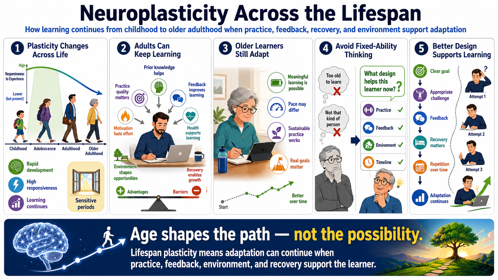

Plasticity Across the Lifespan
Connecting to LMS... Progress: in progress

Narration
Neuroplasticity exists across the lifespan, but the conditions and speed of learning can vary. Childhood and adolescence include periods of rapid development and high responsiveness to experience. Some kinds of learning may have critical or sensitive periods, meaning developmental windows when certain adaptations are especially responsive. This does not mean learning ends when those windows close.
Adults can continue learning and building skills. Prior knowledge, practice quality, motivation, feedback, health, environment, and recovery all matter. Adults may use different strategies than children because they bring more experience, stronger existing habits, and more responsibilities. That can create both advantages and barriers. Existing knowledge can help new learning attach, but old patterns may also need deliberate adjustment.
Older learners can also continue adapting, though realistic expectations matter. Speed, energy, recovery needs, and prior experience may influence how practice should be designed. The useful message is neither extreme optimism nor deterministic pessimism. Age may shape the path, but it does not make meaningful learning impossible. Practice should be appropriate, sustainable, and connected to real goals.
Avoid fixed-ability thinking. Saying, I am too old to learn, or I am just not that kind of person, can stop effort before evidence is gathered. A better question is, what practice design, feedback, environment, and timeline would support this learner now? Lifespan plasticity is not a promise that every outcome is equally easy. It is a reminder that adaptation can continue when conditions support it.